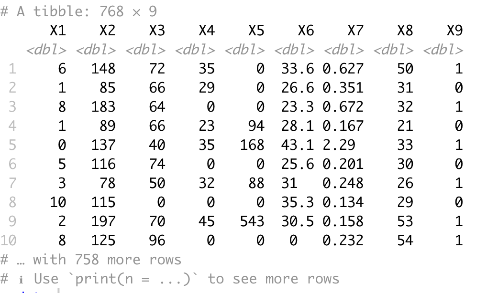
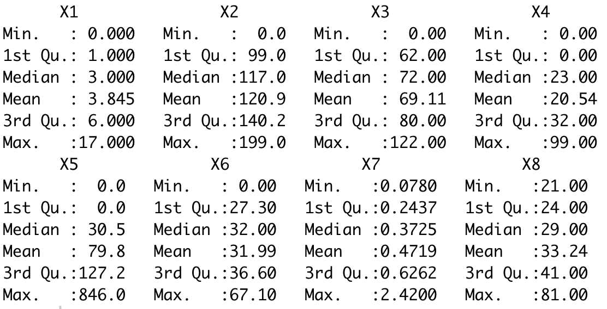
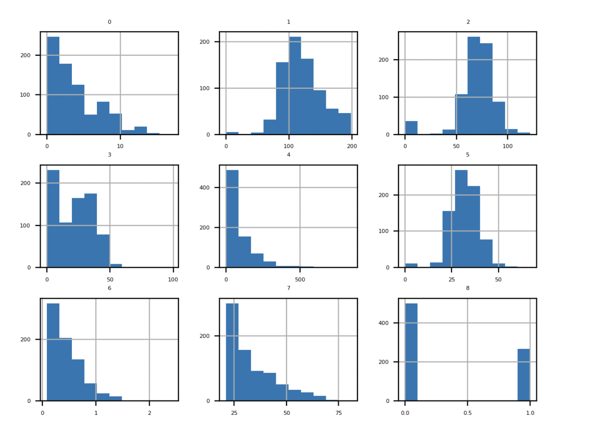
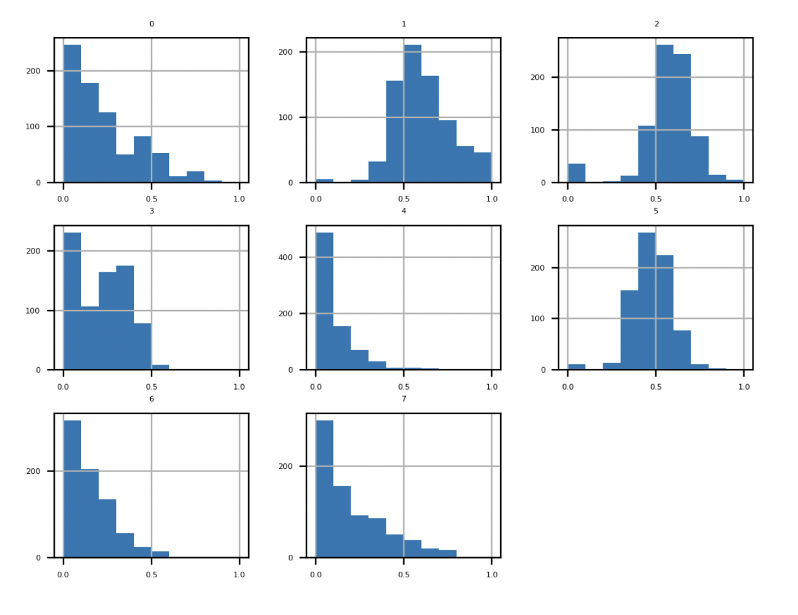
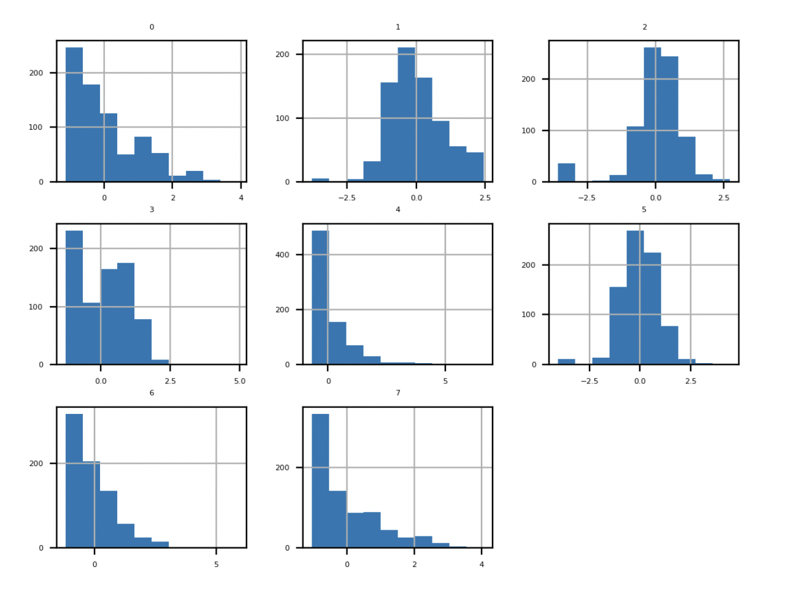

Tuseday class will be on the zoom
Why do we scale numerical data?
The two most popular techniques for scaling numerical data prior to modeling are normalization and standardization
Normalization scales each input variable
separately to the range 0-1
Standardization scales each input variable separately by subtracting the mean (called centering) and dividing by the standard deviation to shift the distribution to have a mean of zero and a standard deviation of one
Most models learn a mapping from input variables to an output variable
The scale and distribution of the data drawn from the domain may be different for each variable
Input variables may have different units (e.g. feet, kilometers, and hours) that, in turn, may mean the variables have different scales
- Differences in the scales across input variables may increase the diffculty of the problem being modeled
- some algorithms would not be affected by scaling
- some algorithms would not be affected by scaling: random forest
- others would be senstivie to the modeling
Normalization is a rescaling of the data from the original range so that all values are within the new range of 0 and 1
Need to accurately estimate min and max
- A value is normalized as follows:
- $y = \frac{x -\text{min}}{\text{max}-\text{min}}$
- where the minimum and maximum values pertain to the value $x$ being normalized
- e.g. observed min, max: -10 and 30
- Normalize a point 18.8
- $\frac{18.8 - (-10)}{30-(-10)}=0.72$
You can see that if an $x$ value is provided that is outside the bounds of the minimum and maximum values, the resulting value will not be in 0 and 1
You could check for these observations prior to making predictions and either remove them from the dataset or limit them to the pre-defined maximum or minimum values
Standardizing a dataset involves rescaling the distribution of values so that the mean of observed values is 0 and the standard deviation is 1
This can be thought of as subtracting the mean value or centering the data
Standardization assumes that your observations fit a Gaussian distribution (bell curve) with a well-behaved mean and standard deviation
You can still standardize your data if this expectation is not met, but you may not get reliable results
Standardization requires that you know or are able to accurately estimate the mean and standard deviation of observable values
Subtracting the mean from the data is called centering, whereas dividing by the standard
deviation is called scaling
- A value is standardized as follows:
- $y=\frac{x-\text{mean}}{\text{standard deviation}}$
- where mean$=\frac{1}{N}\sum_{i=1}^N x_i$
- and standard deviation$=\sqrt{\frac{\sum_{i=1}^N(x_i-\text{mean})^2}{N-1}}$
- We use the diabetes dataset
- This dataset classifies patients data as either an onset of diabetes within five years or not
- Let's see the data

- confirms the 7 input variables, one output variable, and 768 rows of data

- Each variable has a very different scale
- Revisit caret package in R
The preProcess class can be used for many operations on predictors, including centering and scaling
The function preProcess estimates the required parameters for each operation and predict.preProcess is used to apply them to specific data sets
preEstimates <- preProcess(your_data, method = c('range'))
normalized_data <- predict(preEstimates, your_data)
- See the basic syntax
- method = c('range') corresponds to scales the data within 0 and 1
- method = c('center', 'scale') corresponds to Standardization
Now consider the distribution
Non scaled distribution

Histogram Plots of scaled input dist

Histogram Plots of standardized input dist

Should I normalize or standardize?
Whether input variables require scaling depends on the specifics of your problem and of each variable
- You may have a sequence of quantities as inputs, such as prices or temperatures
- If the distribution of the quantity is normal, then it should be standardized, otherwise, the data should be normalized
- This applies if the range of quantity values is large (10s, 100s, etc.) or small (0.01, 0.0001)
- If the quantity values are small (near 0-1) and the distribution is limited (e.g. standard deviation near 1), then perhaps you can get away with no scaling of the data
Standardization also can give values that are both positive and negative centered around zero